Library
Browse around, take what you need.
Bookshelf 130 · scroll within
- Kary Mullis, 1998
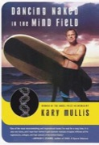
Dancing Naked in the Mind FieldKary Mullis, 1998222 pagesScience, Popular works, Miscellanea - Erwin Schrödinger, 1944What Is Life?Erwin Schrödinger, 1944178 pagesLife (Biology), Biological aspects, Biophysics
- Horace Freeland Judson, 1979
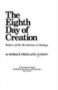
The Eighth Day of CreationHorace Freeland Judson, 1979686 pagesDNA, Molecular biology, Histoire - Sally Smith Hughes, 2011Genentech: The Beginnings of BiotechSally Smith Hughes, 2011
- Nathan Vardi, 2023For Blood and MoneyNathan Vardi, 2023
- Alexander C. Karp, 2025The Technological RepublicAlexander C. Karp, 2025
- Ben Rich, 1994
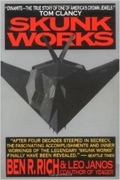
Skunk WorksBen Rich, 1994370 pagesAeronautics, Aeronautics, Military, Career in aeronautics - James Nestor, 2020
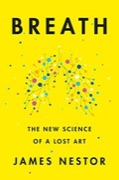
BreathJames Nestor, 2020334 pagesBreathing exercises, Respiration, nyt:combined-print-and-e-book-nonfiction=2020-06-14 - Robert Sapolsky, 2017
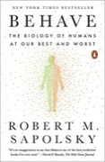
BehaveRobert Sapolsky, 2017795 pagesNeurophysiology, Neurobiology, Animal behavior - Francis Crick, 1981
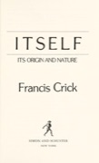
Life ItselfFrancis Crick, 1981192 pagesLife, Origin, Life (biology) - Richard Feynman, 1985
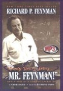
Surely You're Joking, Mr. Feynman!Richard Feynman, 1985352 pagesAnecdotes, Anecdotes, facetiae, satire, Art - Michael Lewis, 1989
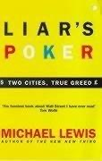
Liar's PokerMichael Lewis, 1989304 pagesSalomon Brothers, Brokers, Biography - Charles Darwin, 1859
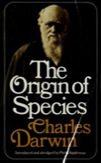
On the Origin of SpeciesCharles Darwin, 1859502 pagesEvolution, Evolution (Biology), Evolución - Arnold Schwarzenegger, 2023Renditi UtileArnold Schwarzenegger, 2023
- Donella Meadows, 2008Thinking in SystemsDonella Meadows, 2008240 pagescritical thinking, systems thinking, systems dynamics
- Carl Sagan, 1980
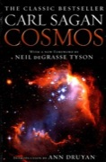
CosmosCarl Sagan, 1980354 pagesOuvrages de vulgarisation, Astronomie, Astronomy - C.H. Waddington, 1957The Strategy of the GenesC.H. Waddington, 1957274 pagesEmbryology, Genetics, Evolution
- Isaac Asimov, 1962
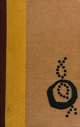
The Genetic CodeIsaac Asimov, 1962187 pagesGenetics, Popular works, Genetic code - Eliyahu Goldratt, 1984
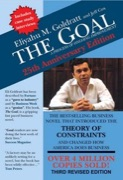
The GoalEliyahu Goldratt, 1984315 pagesProgress, Manufacturing industries, Business - P. Roy Vagelos, 2004Medicine, Science, and MerckP. Roy Vagelos, 2004301 pagesPhysicians, biography, Physicians, Biography
- Jeremy Narby, 2005
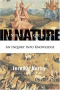
Intelligence in NatureJeremy Narby, 2005278 pagesSociology, Organisms, Animal intelligence - Jeremy Narby, 1998
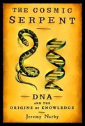
The Cosmic SerpentJeremy Narby, 1998272 pagesAshaninca Indians, DNA, Drug use - Barbara Migeon, 2007
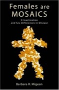
Females Are MosaicsBarbara Migeon, 2007312 pagesX chromosome, Genetic Sex determination, Genetic Diseases, X-Linked - Ken Kesey, 1962
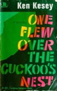
One Flew Over the Cuckoo's NestKen Kesey, 1962311 pagesAllegories, psychiatric nursing, medical novels - Michael Crichton, 1990
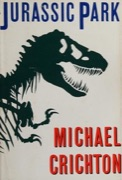
Jurassic ParkMichael Crichton, 1990455 pagesdichogamy, corporate espionage, science fiction - Adam Rutherford, 2016
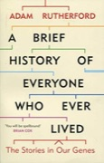
A Brief History of Everyone Who Ever LivedAdam Rutherford, 2016377 pagesOrigin, Genomics, DNA - Peter Godfrey-Smith, 2020MetazoaPeter Godfrey-Smith, 2020352 pagesSelf (philosophy), Psychology, comparative, Consciousness
- Paul Stamets, 1996
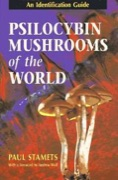
Psilocybin Mushrooms of the WorldPaul Stamets, 1996245 pagesHallucinogenic Mushrooms, Identification, Mushrooms, Hallucinogenic - Le Meraviglie del Nostro Corpo
- Carl Sagan, 1979
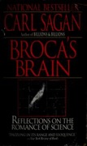
Broca's BrainCarl Sagan, 1979398 pagesCiencia y civilizacio n., Ciencias espaciales, Science and civilization - Joseph LeDoux, 2002
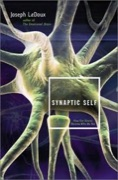
Synaptic SelfJoseph LeDoux, 2002352 pagesSelf, Neuropsychology, Personality - V.S. Ramachandran, 2010
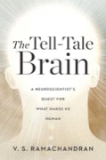
The Tell-Tale BrainV.S. Ramachandran, 2010358 pagesneuroscience, humanity, psychology - Richard Feynman, 1964
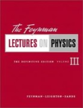
The Feynman Lectures on PhysicsRichard Feynman, 19646 pagesProblems, exercises, Textbooks, Open Library Staff Picks - John Mather, 1996
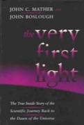
The Very First LightJohn Mather, 1996352 pagesCosmic background radiation, Extraterrestrial radiation, Cosmic radiation background - Randall Munroe, 2014
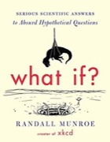
What If?Randall Munroe, 2014306 pagesMathematics, Statistics, Miscellanea - Richard Feynman, 1988
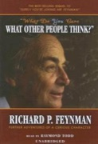
What Do You Care What Other People Think?Richard Feynman, 1988256 pagesAnecdotes, Science, Physicists - Francis Crick, 1988
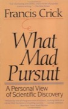
What Mad PursuitFrancis Crick, 1988182 pagesBiography, Biologists, England - James Gleick, 1992Genius: The Life and Science of Richard FeynmanJames Gleick, 1992
- Donald Stokes, 1997Pasteur's QuadrantDonald Stokes, 1997180 pagesHistory, Paradigm (Theory of knowledge), Science and state
- Richard Feynman, 2005Perfectly Reasonable Deviations from the Beaten TrackRichard Feynman, 2005486 pagesCorrespondence, Physicists, Physics
- James D. Watson, 2007Avoid Boring PeopleJames D. Watson, 2007358 pagesBiography, Molecular biologists, Natuurwetenschappen
- Benjamín Labatut, 2023
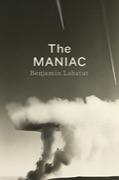
The MANIACBenjamín Labatut, 2023361 pagesRomance literature, Inteligencia artificial, Matemáticas - Mario Livio, 2013
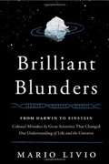
Brilliant BlundersMario Livio, 2013350 pagesScientific Errors, SCIENCE / History, BIOGRAPHY & AUTOBIOGRAPHY / Science & Technology - Benjamin Graham, 1949
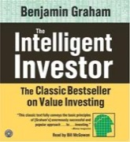
The Intelligent InvestorBenjamin Graham, 1949352 pagesSecurities, Investments, investing - Robert Kiyosaki, 1997Rich Dad Poor DadRobert Kiyosaki, 1997241 pagesRich people, Personal Finance, Investments
- Richard Branson, 1998
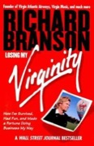
Losing My VirginityRichard Branson, 1998488 pagesAirlines, Biography, Businesspeople - Geoff Smart and Randy Street, 2008
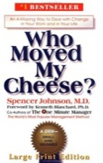
WhoGeoff Smart and Randy Street, 200896 pagesChange (psychology), Large type books, Life change events - Peter Thiel, 2014
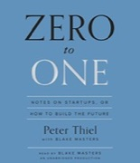
Zero to OnePeter Thiel, 2014253 pagesDiffusion of innovations, New business enterprises, New products - Tony Robbins, 2014
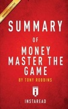
Money: Master the GameTony Robbins, 2014 - Luca Dal Monte, 2016Enzo FerrariLuca Dal Monte, 2016576 pagesAutomobile engineers, Biography
- Darrell Huff, 1954
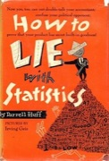
How to Lie with StatisticsDarrell Huff, 1954142 pagesStatistics, Statistieken, Textbooks - Albert-László Barabási, 2002
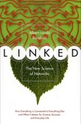
LinkedAlbert-László Barabási, 2002304 pagesWorld Wide Web, Philosophy, Computer networks - Nate Silver, 2012
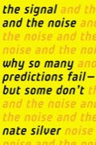
The Signal and the NoiseNate Silver, 2012552 pagesBayesian statistical decision theory, Theory of Knowledge, Forecasting - Ibn Fadlan, c. 921
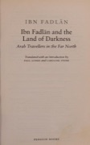
Ibn Fadlan and the Land of DarknessIbn Fadlan, c. 921256 pagesEarly works to 1800, History, Description and travel - Robert Caro, 1974The Power BrokerRobert Caro, 19741263 pagesUrban renewal, New york (n.y.), history, Moses, robert, 1888-1981
- Howard Zinn, 1980A People's History of the United StatesHoward Zinn, 1980695 pagesnyt:paperback_nonfiction=2010-05-16, New York Times bestseller, History
- CIA, 1983Psychological Operations in Guerrilla WarfareCIA, 1983
- Robert Greene, 2001
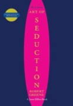
The Art of SeductionRobert Greene, 2001467 pagesCourtship, Seduction, Sexual excitement - Hunter S. Thompson, 2003Kingdom of FearHunter S. Thompson, 2003354 pagesJournalists, Biography, American Authors
- Tim Weiner, 2007Legacy of Ashes: The Secret History of the CIATim Weiner, 2007
- Yuval Noah Harari, 2011
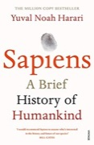
SapiensYuval Noah Harari, 2011456 pagesTechnology and civilization, Human beings, Historical Chronology - David Talbot, 2012Season of the WitchDavid Talbot, 2012480 pagesSocial life and customs, Political culture, Social change
- David McGowan, 2014
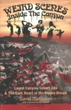
Weird Scenes Inside the CanyonDavid McGowan, 2014Social life and customs, Rock musicians, Counterculture - Tom O'Neill, 2019ChaosTom O'Neill, 2019528 pagesMurderers, Murder, california, Manson, charles, 1934-2017
- David Talbot, 2015The Devil's ChessboardDavid Talbot, 2015695 pagesUnited States, Intelligence officers, Official secrets
- Antonin Scalia, 2017Scalia SpeaksAntonin Scalia, 2017420 pagesJudges, Officials and employees, Judicial opinions
- Malcolm Gladwell, 2019
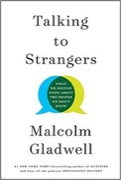
Talking to StrangersMalcolm Gladwell, 2019386 pagesInterpersonal communication, Strangers, nyt:combined-print-and-e-book-nonfiction=2019-09-29 - Mircea Eliade, 1951ShamanismMircea Eliade, 1951650 pages
- Pierre Teilhard de Chardin, 1955
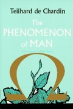
The Phenomenon of ManPierre Teilhard de Chardin, 1955320 pagesPaleoantropologie, Evolution, Philosophy - Alan Watts, 1957The Way of ZenAlan Watts, 1957245 pagesZen Buddhism, Bouddhisme zen, Essence, esprit, nature
- Marcus Aurelius, c. 180MeditationsMarcus Aurelius, c. 180203 pagesPhilosophy, Nonfiction, Classics
- Milo Rigaud, 1969Secrets of VoodooMilo Rigaud, 1969Religion, Voodooism, Folklore
- Phil Hine, 1995
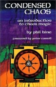
Condensed ChaosPhil Hine, 1995192 pagesMagic - C.G. Jung, 1996The Psychology of Kundalini YogaC.G. Jung, 1996128 pagesKuṇḍalinī, Psychology, Psychologische aspecten
- Ingo Swann, 1999Psychic SexualityIngo Swann, 1999318 pagesPsychic, ESP, Spiritual Development
- Mark Booth, 2008The Secret History of the WorldMark Booth, 2008464 pagesErrors, inventions, Secret societies, Nonfiction
- Teresa Moorey, 2008
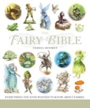
The Fairy BibleTeresa Moorey, 2008400 pagesFairies, Encyclopedias - D.W. Pasulka, 2019American CosmicD.W. Pasulka, 20191 pages
- Ed Simon, 2022PandemoniumEd Simon, 2022400 pages
- D.W. Pasulka, 2023
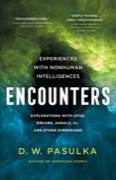
EncountersD.W. Pasulka, 2023 - Garrett M. Graff, 2023UFOGarrett M. Graff, 2023844 pagesUnited states, politics and government, Conspiracy theories, United states, history, 20th century
- Miguel de Cervantes
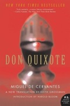
Don Quijote de la ManchaMiguel de Cervantes519 pagesDon Quixote (Cervantes Saavedra, Miguel de), Quotations, Knights and knighthood - Rudyard Kipling, 1894The Jungle BookRudyard Kipling, 1894192 pagesJungles, Fiction, Juvenile fiction
- Hermann Hesse, 1922
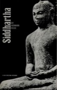
SiddharthaHermann Hesse, 1922140 pagesAlegorías, Buddha (The concept), Buddha and Buddhism - F. Scott Fitzgerald, 1925The Great GatsbyF. Scott Fitzgerald, 1925185 pagesMarried people, fiction, American fiction (fictional works by one author), Fiction, psychological
- Ernest Hemingway, 1926
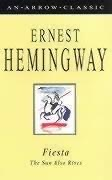
The Sun Also RisesErnest Hemingway, 1926249 pagesFiction, Historical, Expatriation, fiction, Americans - J.D. Salinger, 1951
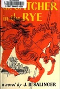
The Catcher in the RyeJ.D. Salinger, 1951240 pagesfictional works, Runaway teenagers, Fiction - Ian Fleming, 1953–1965Casino RoyaleIan Fleming, 1953–1965189 pagesBritish, Fiction, Fiction in English
- Ayn Rand, 1957Atlas ShruggedAyn Rand, 19571096 pagesClassic Literature, Fiction, Literature
- Ayn RandThe FountainheadAyn Rand724 pagesFiction, Architects, Individualism
- Beppe Fenoglio, 1968Il Partigiano JohnnyBeppe Fenoglio, 1968527 pagesRomance italiano
- Charles Bukowski, 1971Post OfficeCharles Bukowski, 1971160 pagesFiction, Postal service, Employees
- Umberto Eco, 1980Il Nome della RosaUmberto Eco, 1980533 pagesNovela de misterio, History, Monasticismo y vida religiosa
- Greg Egan, 1994Permutation CityGreg Egan, 1994340 pagesTwenty-first century in fiction, Twenty-first century, Fiction
- Michael Crichton, 1995The Lost WorldMichael Crichton, 1995419 pagesprions, scrapie, Ornitholestes
- Philip Pullman, 1995–2000His Dark MaterialsPhilip Pullman, 1995–2000981 pagesChildren's fiction, Fantasy fiction, Belacqua, lyra (fictitious character), fiction
- Neil Gaiman, 2002CoralineNeil Gaiman, 2002176 pagesFantasy, Paranormal fiction, Juvenile fiction
- Charles Stross, 2005AccelerandoCharles Stross, 2005448 pagesArtificial intelligence, Fiction, Long Now Manual for Civilization
- Daniel Suarez, 2006DaemonDaniel Suarez, 2006540 pagesHuman-computer interaction, International economic integration, Computer programmers
- Liu Cixin, 2008–2010The Three-Body ProblemLiu Cixin, 2008–2010562 pagesChinese Science fiction, Fiction, Science Fiction
- Mohsin Hamid, 2013How to Get Filthy Rich in Rising AsiaMohsin Hamid, 2013228 pagesSelf-realization, Fiction, Businessmen
- Blake Crouch, 2016Dark MatterBlake Crouch, 2016366 pagesKidnapping, Fiction, Reality
- Andy Weir, 2021Project Hail MaryAndy Weir, 2021496 pageshard science-fiction, science-fiction, sci-fi
- Quentin Tarantino, 2021Once Upon a Time in HollywoodQuentin Tarantino, 2021312 pagesnyt:mass-market-monthly=2021-07-11, New York Times bestseller, New York Times reviewed
- Walt Whitman, 1855Leaves of GrassWalt Whitman, 1855384 pagesManuscripts, United States Civil War, 1861-1865, Gay poets
- T.S. Eliot, 1922The Waste Land and Other PoemsT.S. Eliot, 192298 pages
- Pablo Neruda, 1952The Captain's VersesPablo Neruda, 1952
- Robert Frost, 1969The Poetry of Robert FrostRobert Frost, 1969638 pagesPoetry, American poetry, history and criticism, 20th century
- Pier Paolo Pasolini, 1986Roman PoemsPier Paolo Pasolini, 1986145 pagesTranslations into English, Poetry (poetic works by one author)
- Langston Hughes, 2004Vintage HughesLangston Hughes, 2004194 pagesLiterary collections, African Americans, Poetry (poetic works by one author)
- E.E. CummingsSelected PoemsE.E. Cummings121 pagesPoems, Poésie américaine, Poetry
- Bob DylanLyricsBob Dylan520 pagesTexts, Popular music, Songs, texts
- Jacques Pépin, 1976La TechniqueJacques Pépin, 1976470 pagesCookery, Cookbooks, Cooking
- Anthony Bourdain, 2000Kitchen ConfidentialAnthony Bourdain, 2000320 pagesCooks, Cocineros, History
- Chandler Burr, 2002The Emperor of ScentChandler Burr, 2002352 pagesSmell, Biophysicists, Nose
- Jacques Pépin, 2011Essential PépinJacques Pépin, 2011685 pagesFrench Cooking, Cooking, nyt:hardcover_advice=2011-12-31
- Jacques-Yves Cousteau, 1971Diving for Sunken TreasureJacques-Yves Cousteau, 1971302 pagesTreasure troves
- Roger Steene, 1998Coral SeasRoger Steene, 1998271 pagesCoral reef ecology, Coral reef biology, Pictorial works
- Carrie Miller, 2019100 Dives of a LifetimeCarrie Miller, 2019400 pagesScuba diving, Underwater exploration
- National Geographic, 2019Epic JourneysNational Geographic, 2019416 pages
- 52 Weekend Adventures in Northern California300 pagesAmerica, history
- Complete Flags of the World240 pagesFlags, Flagge, National Emblems
- François Truffaut, 1966Il Cinema Secondo HitchcockFrançois Truffaut, 1966
- Andrew Loomis, 1943Figure Drawing: For All It's WorthAndrew Loomis, 1943204 pagesHuman figure in art, Figure drawing, Artistic anatomy
- Dave LewisLed Zeppelin: Anni di FuocoDave Lewis
- Bob Spitz, 2012The Rolling Stones: 50 YearsBob Spitz, 2012
- Jason Barlow, 2019Auto EroticaJason Barlow, 2019159 pagesAmerican Short stories, Fiction
- Jim HeimannAll-American AdsJim Heimann192 pagesPictorial works, Nineteen forties, Advertising copy
- AssoulineBali MystiqueAssouline
- Webster's New Twentieth Century Dictionary, Unabridged2129 pagesDictionaries, English language
Non-books
- Cosmos: A Personal Voyage Carl Sagan, 1980Cosmos: A Personal VoyageCarl Sagan, 1980archive.org
- Fun to Imagine Richard Feynman, BBC, 1983Fun to ImagineRichard Feynman, BBC, 1983youtube.com
- Tom Lehrer: Live in Copenhagen, 1967Tom Lehrer: Live in Copenhagen, 1967youtube.com
- Wendover ProductionsWendover Productionswendoverproductions.com
- Acquired PodcastAcquired Podcastacquired.fm
- Conversations with Tyler Tyler CowenConversations with TylerTyler Cowenconversationswithtyler.com
- C'était un rendez-vous Claude Lelouch, 1976C'était un rendez-vousClaude Lelouch, 1976youtube.com
- Marginal Revolution Tyler Cowen and Alex TabarrokMarginal RevolutionTyler Cowen and Alex Tabarrokmarginalrevolution.com
- American Alchemy Jesse MichelsAmerican AlchemyJesse Michelsyoutube.com
- Doug DeMuroDoug DeMuroyoutube.com
- Good WorkGood Workyoutube.com
- FREEDIVER Alexey Molchanov, Amazon Prime VideoFREEDIVERAlexey Molchanov, Amazon Prime Videoamazon.com
- Molchanovs FreedivingMolchanovs Freedivingyoutube.com
- Andrej KarpathyAndrej Karpathyyoutube.com
- MaxinomicsMaxinomicsyoutube.com
- Odds on OpenOdds on Openyoutube.com